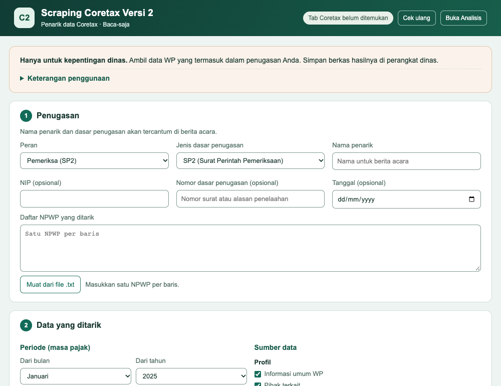

Penarik data
Masukkan satu NPWP dan pilih sumber. Pratinjau mencocokkan tabel yang terbuka dengan penugasan. Pilih versi SPT yang diperlukan dan periksa cakupan tiap sumber di ZIP.
Prarilis 0.13.0 untuk Chrome
Kumpulkan tabel yang tampil di Coretax atau impor ekspor JSON dan CSV. Buka paket hasilnya di pemutar lokal untuk menelusuri profil, SPT, dan data sumber.
ZIP untuk Chrome desktop 116 ke atas · SHA-256

Versi ini bisa dicoba menggunakan berkas fiktif. Penarikan otomatis seluruh modul dan kesetaraan kertas kerja VERITAX masih dalam pengembangan.
Masukkan satu NPWP dan pilih sumber. Pratinjau mencocokkan tabel yang terbuka dengan penugasan. Pilih versi SPT yang diperlukan dan periksa cakupan tiap sumber di ZIP.
Buka ZIP secara luring untuk memeriksa profil WP, formulir dan pembetulan. Di kertas kerja, telusuri bukti tiap temuan, simpan status telaah indikasi, dan unduh hasilnya ke Excel.
Cari kode dan nama kegiatan dalam KBLI 2020, KBLI 2025, serta kode khusus KLU Z. Telusuri indeks peraturan atau buka naskah resmi dari tautan sumber.
Simpan folder hasil ekstraksi di lokasi tetap agar Chrome dapat membukanya kembali.
Pilih folder yang memuat berkas manifest.json.
Ketik chrome://extensions pada bilah alamat Chrome, lalu aktifkan Mode developer.
Klik Muat yang belum dipaketkan atau Load unpacked, lalu pilih folder hasil ekstraksi.
Klik ikon Scraping Coretax Versi 2 di menu ekstensi. Pilih halaman penarik atau buka pemutar analisis dari sana.